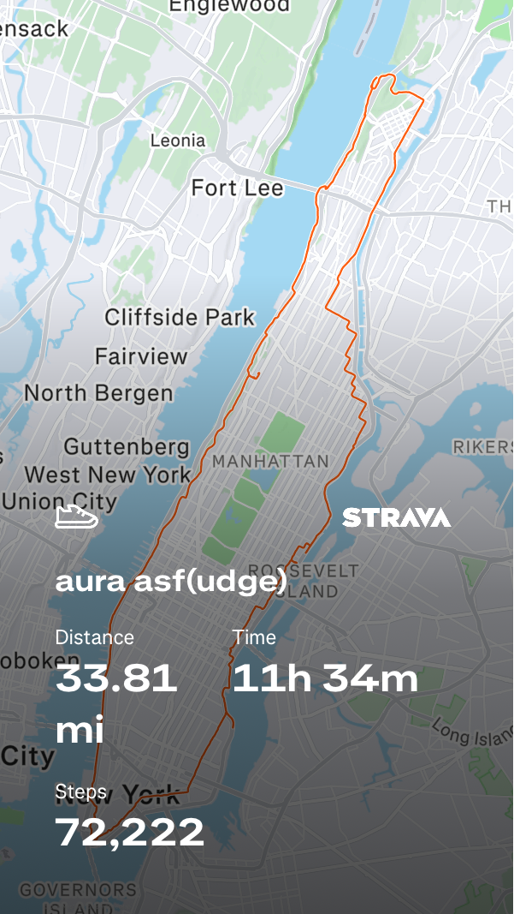
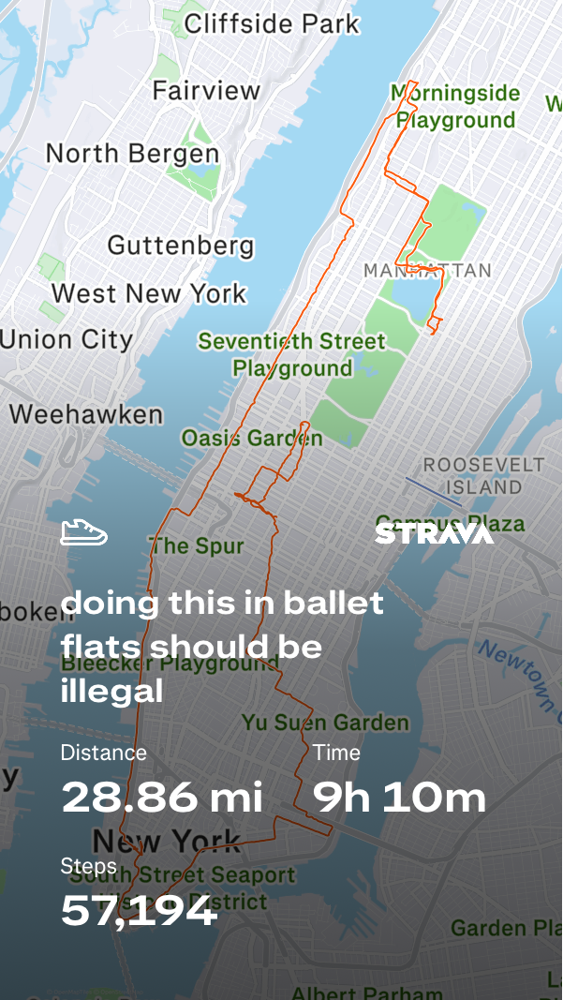
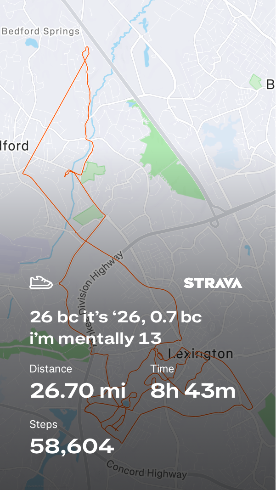
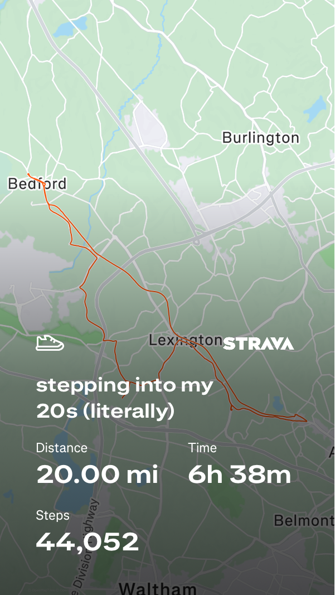
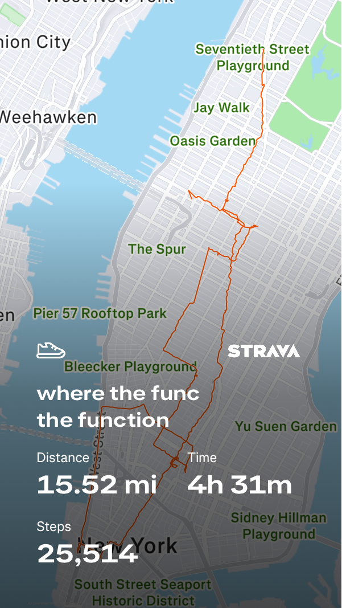
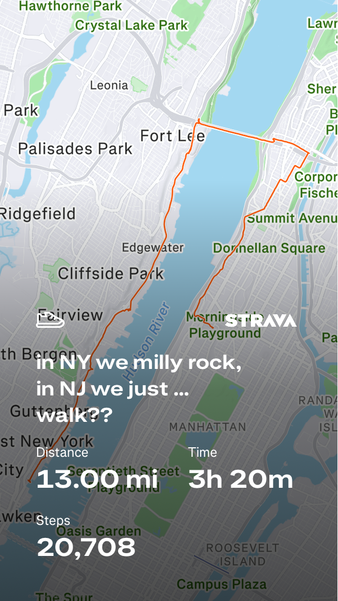

01
aura asf (udge)
33.81 miles · 11h 34m · 72,222 steps
The longest one here, and probably the walk that most fully crossed the line from a nice day out into something slightly unreasonable.
Selected walks. Full activity archive on Strava.

01
33.81 miles · 11h 34m · 72,222 steps
The longest one here, and probably the walk that most fully crossed the line from a nice day out into something slightly unreasonable.

02
28.86 miles · 9h 10m · 57,194 steps
Self-explanatory. A strong argument for better planning and worse decision-making.

03
26.70 miles · 8h 43m · 58,604 steps
Equal parts birthday bit and endurance event.

04
20.00 miles · 6h 38m · 44,052 steps
Cleaner in concept than in execution, but still one of my favorites.

05
15.52 miles · 4h 31m · 25,514 steps
Not the longest here, but one of the most visually chaotic routes.

06
13.00 miles · 2h 20m · 20,708 steps
Caption inspired by “Magnolia” by Playboi Carti, though this is pretty much the only lyric I know.